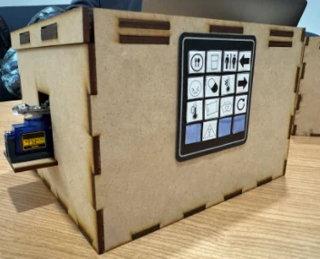
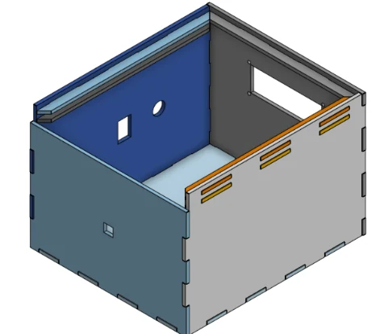

Project 003 / Assistive Technology · CAD
Point-to-Point
Communication System.
A prototype designed to help people who face communication difficulties in hospital settings express needs through remote notifications using infrared (IR) signaling.

CommunicationInfrared transmitter + receiver
Transmitter orientationKeypad-controlled servo
My contributionsCAD, laser cutting, assembly
01 / Project overview
Making needs easier to communicate.
This project explores a remote notification device for people who may struggle to communicate their needs in a hospital environment. An IR transmitter sends information to an IR receiver. A keypad is used to rotate the transmitter using a servo motor so that it faces the receiver. The physical prototype uses a custom enclosure with a display and symbol interface.
02 / My engineering contributions
Designed to house the hardware.
- 01 — CAD enclosure designModeled the housing and servo-motor mount in Onshape to accommodate the device's components.
- 02 — Laser-cut fabricationPrepared and laser-cut the enclosure panels, using interlocking edges for assembly.
- 03 — Physical assemblyAssembled the enclosure and integrated the motor-mount structure into the finished housing.
- 04 — Project integrationThe system uses Arduino IDE and IR transmitter/receiver hardware; the overall device was developed as a team project.

03 / Design & build gallery
From CAD to physical prototype.
04 / Demonstrations
See the prototype.
Two videos documenting the project prototype. These clips are included directly on the page.
Demonstration 1
Demonstration 2
Other work